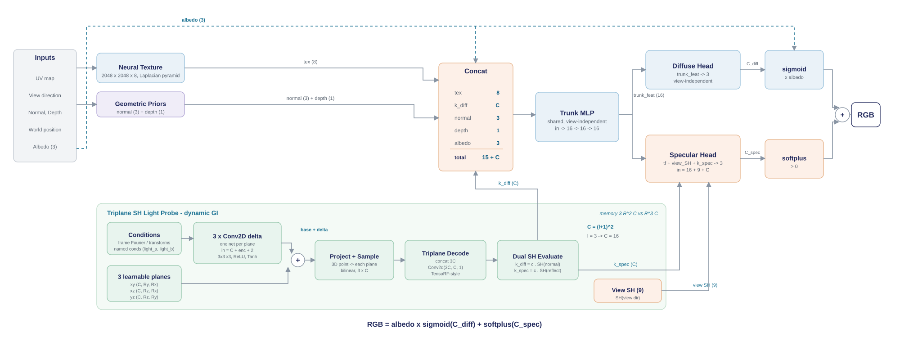

Lightweight Dynamic Neural Rendering
Research Associate, The Hong Kong Polytechnic University, in collaboration with Huawei (Dec 2025 - Jul 2026)
Project Overview
A lightweight neural rendering pipeline for scenes with dynamic global illumination, built on rasterization plus neural shading and targeted at mobile GPUs. Base materials are encoded in a neural texture, dynamic lighting is stored in a triplane of spherical-harmonic light probes, and a small dual-branch MLP decodes both into the final colour.
The result runs at a stable 25 dB PSNR and 90+ FPS on a Huawei Mate 70 Pro for complex dynamic-GI scenes, with 10x less probe storage than voxel probes. A paper is in preparation for TVCG.
Architecture
Rasterized G-buffer inputs (UV, normal, depth, albedo, view direction) sample a Laplacian-pyramid neural texture and a triplane light probe. The concatenated features go through a shared trunk MLP, then split into a view-independent diffuse head and a view-dependent specular head. Final colour is albedo x sigmoid(diffuse) + softplus(specular).

trunk MLP -> diffuse / specular heads">Key Contributions
Material / Lighting Decoupling with Two-Stage Training
Base materials are encoded in a neural texture. Stage one learns materials together with static and dynamic GI; stage two jointly optimizes the texture and light probes on an interpolation grid over moving-object positions, so position-dependent shadows are fitted directly and training converges faster.
Triplane SH Light Probes with Condition Encoding
Spherical-harmonic lighting coefficients live in three learnable planes instead of a voxel grid, cutting storage by 10x. Scene conditions (object poses, light switch states) are encoded and fed to a per-plane Conv2D that predicts a lighting residual. Residuals are pre-baked at grid nodes across the condition space and interpolated at runtime, so no convolution runs on the device.
Dual-MLP Trunk-Head Network
A shared trunk feeds separate diffuse and specular heads, decoupling low-frequency diffuse shading from high-frequency view-dependent specular. G-buffer data and the physical shading model give extra supervision while shrinking the network, which is what makes 90+ FPS on a phone possible.
Scene Construction and Automated Data Pipeline
Built high-fidelity scenes with complex materials and dynamic lighting in Blender and Unreal Engine. An automated pipeline samples multi-view cameras and smooth trajectories around scene targets, renders ground truth with exact poses, and extracts G-buffers (BaseColor, normals, depth) aligned to the physical lighting.
Results: Ground Truth vs. Neural Render
Held-out test views on three animated scenes. Left half of each clip is the path-traced ground truth, right half is the neural render. Averages are over 240 test images per scene.
Hong Kong Street - moving spotlight drone, wet ground
PSNR 28.61 dB | SSIM 0.974Audi R8 - opening doors, sun shadows
PSNR 29.93 dB | SSIM 0.980Lego Bulldozer - articulated arm, self-shadowing
PSNR 26.82 dB | SSIM 0.985Condition Encoding: Switching Lights at Runtime
The living room has two light sources, A and B, whose on/off states are encoded as scene conditions. One trained model renders all three combinations below along the same camera path; the triplane residual shifts the entire indirect lighting without retraining or extra probes.
Technologies
- Training: Python, PyTorch, Laplacian-pyramid neural texture, TensoRF-style triplane decode, dual SH evaluation (normal / reflect)
- Data: Blender and Unreal Engine scenes, scripted camera sampling, G-buffer export (UV, normal, depth, world position, albedo)
- Deployment: Pre-baked residual grid with runtime interpolation, WebGL viewer, on-device evaluation on Huawei Mate 70 Pro